| time | saw | phase | planner | actions (with human reaction time) | notes | cost |
|---|
0:02.0
turn 1 |  |
tutorial
decider: tutorial 97%
clarity 98% |
sees: Synthwave 3-lane car runner with tutorial prompt 'Swipe to switch lanes!'
progress: First look at the game. |
0:03.6 swipe Switch to the right lane to follow tutorial and dodge the pink block (+1643 ms) |
3-lane runner. Swipe left/right to switch lanes. Dodge pink blocks, collect coins. | 2.5s
$0.0060 |
0:04.5
turn 2 |  |
gameplay
decider: gameplay 73%
clarity 70%
last input worked: 97% |
sees: Cyan car in right lane, pink block in middle lane, coins on left, road ahead
progress: Swiped right, dodged pink block and collected coins
reflex policy (zone 450,400,750,850) · following the player from [700,650] : dodge_left — a pink block with an X is directly ahead of the player and the lane to the player's left is clear; dodge_right — a pink block with an X is directly ahead of the player and the lane to the player's left is blocked or off the road
→ 24 checks, fired 1 (dodge_left×1), ended by duration |
0:05.6 swipe reflex dodge_left (late): a pink block with an X is directly ahead of the player and the lane to the player's left i (+309 ms)  |
3-lane runner. Swipe left/right to switch lanes. Dodge pink X blocks, collect coins. Fast speed, using react. | 6.2s
$0.0101 |
0:07.5
turn 3 |  |
tutorial
decider: tutorial 94%
clarity 96%
last input worked: 65% |
sees: Tutorial prompt: Swipe UP to jump! with orange barriers ahead across all lanes
progress: Dodged pink block, reached 105m, now at jump tutorial |
0:09.1 swipe Swipe up to jump over the orange barrier as instructed (+1581 ms) |
3-lane runner. Swipe left/right to switch lanes. Swipe up to jump over orange barriers. Dodge pink X blocks, collect coins. | 5.2s
$0.0060 |
0:09.9
turn 4 |  |
gameplay
decider: gameplay 68%
clarity 77%
last input worked: 100% |
sees: 3-lane runner gameplay, GREAT JUMP! text, car in middle lane
progress: Jumped over the orange barrier successfully
reflex policy (zone 400,250,720,750) · following the player from [650,500] : jump_barrier — an orange barrier is directly ahead of the player; dodge_left — a pink block with an X is directly ahead of the player and the lane to the player's left is clear; dodge_right — a pink block with an X is directly ahead of the player and the lane to the player's left is blocked
→ 8 checks, fired 6 (dodge_left×4, dodge_right×2), ended by duration |
0:10.1 swipe reflex dodge_left: a pink block with an X is directly ahead of the player and the lane to the player's left i (+180 ms) 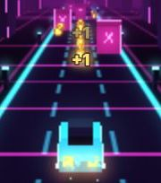
0:10.8 swipe reflex dodge_left: a pink block with an X is directly ahead of the player and the lane to the player's left i (+236 ms) 
0:11.6 swipe reflex dodge_right (other way: wall): a pink block with an X is directly ahead of the player and the lane to the player's left i (+247 ms) 
0:12.3 swipe reflex dodge_right (other way: wall): a pink block with an X is directly ahead of the player and the lane to the player's left i (+230 ms) 
0:13.2 swipe reflex dodge_left: a pink block with an X is directly ahead of the player and the lane to the player's left i (+253 ms) 
0:14.0 swipe reflex dodge_left (late): a pink block with an X is directly ahead of the player and the lane to the player's left i (+310 ms) 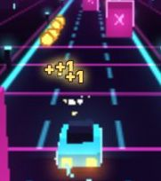 |
3-lane runner. Swipe left/right to switch lanes. Swipe up to jump over orange barriers. Dodge pink X blocks, collect coins. | 4.7s
$0.0086 |
0:14.5
turn 5 | 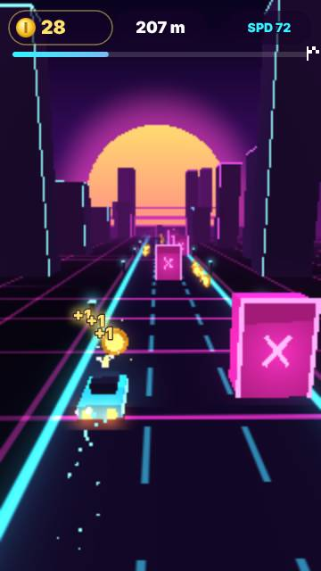 |
gameplay
decider: gameplay 98%
clarity 57%
last input worked: 95% |
sees: 3-lane runner gameplay, car in left lane, 207m, 28 coins
progress: Reflex policy dodged obstacles and collected coins.
reflex policy (zone 450,150,740,850) · following the player from [690,320] : jump_barrier — an orange barrier is directly ahead of the player; dodge_left — a pink block with an X is directly ahead of the player and the lane to the player's left is clear; dodge_right — a pink block with an X is directly ahead of the player and the lane to the player's left is blocked or is the road edge
→ 5 checks, fired 3 (dodge_right×2, dodge_left×1), ended by interrupted |
0:14.7 swipe reflex dodge_right: a pink block with an X is directly ahead of the player and the lane to the player's left i (+186 ms) 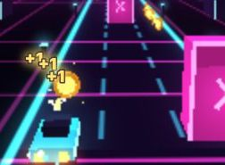
0:15.6 swipe reflex dodge_right (late): a pink block with an X is directly ahead of the player and the lane to the player's left i (+429 ms) 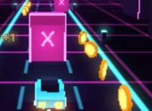
0:16.4 swipe reflex dodge_left: a pink block with an X is directly ahead of the player and the lane to the player's left i (+287 ms) 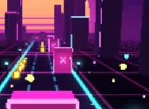 |
3-lane runner. Swipe left/right to switch lanes. Swipe up to jump over orange barriers. Dodge pink X blocks, collect coins. Reflex policy works well. | 5.8s
$0.0097 |
0:17.0
turn 6 | 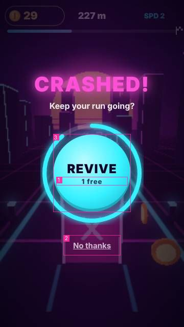 |
fail
decider: fail 97%
clarity 90%
last input worked: 13% |
sees: CRASHED! popup with REVIVE (1 free) button
progress: Crashed at 227m, SPD 2. |
0:18.2 tap “Revive and continue” tap REVIVE (1 free) to continue the run (+1266 ms) |
3-lane runner. Swipe left/right to switch lanes. Swipe up to jump over orange barriers. Dodge pink X blocks, collect coins. Crashed at 227m, reviving for free. | 2.6s
$0.0062 |
0:19.2
turn 7 |  |
gameplay
decider: gameplay 84%
clarity 88%
last input worked: 100% |
sees: Revived at 237m, car in center lane, coins ahead
progress: Revive worked, back in the race
reflex policy (zone 420,200,780,800) · following the player from [720,500] : jump_barrier — an orange barrier is directly ahead of the player; dodge_left — a pink block with an X is directly ahead of the player and the lane to the player's left is clear; dodge_right — a pink block with an X is directly ahead of the player and the lane to the player's right is clear
→ 21 checks, fired 3 (jump_barrier×1, dodge_right×2), ended by duration |
0:20.2 swipe reflex jump_barrier: an orange barrier is directly ahead of the player (+355 ms) 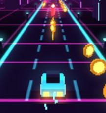
0:21.2 swipe reflex dodge_right: a pink block with an X is directly ahead of the player and the lane to the player's right (+252 ms) 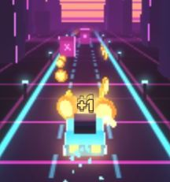
0:22.1 swipe reflex dodge_right: a pink block with an X is directly ahead of the player and the lane to the player's right (+205 ms) 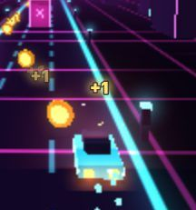 |
3-lane runner. Swipe left/right to switch lanes. Swipe up to jump over orange barriers. Dodge pink X blocks, collect coins. Revived at 237m, SPD 65. | 4.2s
$0.0088 |
0:23.2
turn 8 |  |
gameplay
decider: gameplay 96%
clarity 65%
last input worked: 96% |
sees: 3-lane runner at 326m, SPD 85, magnet active, right lane
progress: Survived 4s, reached 326m, half-way to finish
reflex policy (zone 430,380,780,880) · following the player from [720,640] : jump_barrier — an orange barrier is directly ahead of the player; dodge_left — a pink block with an X is directly ahead of the player and the lane to the player's left is clear of pink blocks; dodge_right — a pink block with an X is directly ahead of the player and the lane to the player's right is clear of pink blocks
→ 10 checks, fired 2 (dodge_right×1, jump_barrier×1), ended by something_new |
0:23.6 swipe reflex dodge_right: a pink block with an X is directly ahead of the player and the lane to the player's right (+285 ms) 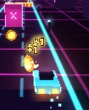
0:24.4 swipe reflex jump_barrier: an orange barrier is directly ahead of the player (+188 ms) 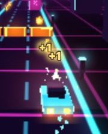 |
3-lane runner. Swipe left/right to switch lanes, up to jump orange barriers. Dodge pink X blocks. Speed is 85 now, magnet active. | 7.1s
$0.0100 |
0:25.5
turn 9 | |
gameplay
decider: gameplay 83%
clarity 46%
last input worked: 81% |
sees: 3-lane runner at 381m, SPD 88, pink X block directly in front of player in right lane
progress: Reflexes dodged and jumped obstacles up to 381m |
0:26.6 swipe Immediately dodge the pink X block in front of the player (+1172 ms) |
3-lane runner. Swipe left/right to switch lanes, up to jump orange barriers. Dodge pink X blocks. SPD 88, magnet active. | 3.4s
$0.0065 |
0:27.2
turn 10 | |
fail
decider: fail 98%
clarity 19%
last input worked: 2% |
sees: GAME OVER text on screen over the 3-lane track
progress: crashed into a pink X block, game over appeared |
0:27.2 wait wait for end card or retry button to appear |
3-lane runner. Swipe left/right to switch lanes, up to jump orange barriers. Dodge pink X blocks. Crashed at 384m, Game Over. | 2.6s
$0.0055 |
0:29.2
turn 11 |  |
end_card
decider: title 42%
clarity 95%
last input worked: 95% |
sees: End card for Neon Lanes showing 79 coins collected and a PLAY NOW button
progress: End card appeared after Game Over |
0:32.2 tap “Play now” Tap the PLAY NOW button on the end card (+527 ms) |
3-lane runner. Swipe left/right to switch lanes, up to jump orange barriers. Dodge pink X blocks. Crashed at 384m, reached end card. | 2.7s
$0.0062 |